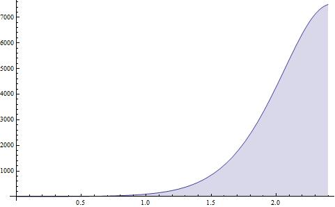

相对论心ç�†å¦1
[æ�¶æ��]相对论心ç�†å¦ç³»åˆ—：
相对论心ç�†å¦1
相对论心ç�†å¦2
相对论心ç�†å¦3
[Update:03-21]
Actually, I am joking! DO NOT PANIC!
本文弃用cc by-nc 2.5å��议。All rights reserved. ä¸�è®¸è½¬è½½ã€‚å› ä¸ºæ–‡ç« è¿˜æ²¡æˆ�å�‹ï¼Œæˆ‘å�ªæ˜¯æŠŠæˆ‘的所有的å°�试都写在这里。而且，记ç�€æ‰€æœ‰è¿™äº›éƒ½æ˜¯a joke。本文将已ç»�完æˆ�äº�2200AD。
ç¬¬ä¸€ç« é—®é¢˜çš„å¼•å…¥
生平最��幸的故事入耳。
幸ä¸�ä¸�å¹¸ï¼Œæˆ‘æ²¡æœ‰è¯„åˆ¤æ ‡å‡†ï¼Œæ‰€æœ‰çš„æµ‹é‡�全部需è¦�在故事主人公的å�‚考系进行。在故事主人公的情感ä¸�è§‚è€…çš„æƒ…æ„Ÿæ— å†²çª�çš„æƒ…å†µä¸‹ï¼Œä¸»äººå…¬çš„æƒ…æ„Ÿå°±ä»…ä»…æ˜¯ä¸€ä¸ªæ ‡é‡�，故事主人公自身å�‚考系ä¸å½“时当地的幸，任何平移下都ä¸�å�˜ã€‚然而，为了æ��述故事主人公的幸ä¸�ä¸�幸，我们需è¦�找出能够代表æŸ�ç§�情感的å�¯ä»¥é‡�化的å�‚é‡�，一般æ¤å�‚é‡�是特定情感下的所有的人共有的一ç§�å�¯ä»¥åº¦é‡�的表ç�°ï¼Œæˆ–者故事主人公所特有的一ç§�表ç�°ã€‚比如下é�¢åœ¨åˆ†æ��爱情的时候所采用的其他观者远离自己的快慢程度（自己ä¸�其他观者的有效交æµ�的多少）乘以其他观者的弥散程度（其他观者对äº�自己的é‡�è¦�程度）。
有两件事情�能是�常��的。
其一是å˜åœ¨è€¦å�ˆçš„情况。如æ�œæ•…事主人公的感å�—是ä¸�其他观者耦å�ˆçš„时候。这ç§�æƒ…å†µå¾€å¾€ä¼šå¯¼è‡´æ— ç©·é€’å½’çš„æƒ…å†µã€‚å€˜è‹¥ä¹Ÿæ˜¯ä¸‹é�¢å°†è¦�æ��到的å�«æ—¶çš„情况，那么还å�¯èƒ½ä¼šå‡ºç�°æ··æ²Œçš„情况。这部分情况需è¦�以å��进行细致讨论。
其二是å�«æ—¶çš„测é‡�。举例æ�¥è¯´ï¼Œä¸€ä¸ªå½“地观者想è¦�观测自身å�‚考系ä¸çš„爱情感å�—进行æ��述。由äº�心ç�†å¦çš„相对性å�Ÿç�†ï¼Œäººæ‰€æ„Ÿå�—到的时空背景ä¸�ä»…ä»…ä¸�物ç�†çš„时空有关，还ä¸�观者自身的情感状况（情感密度和情感的物æ€�方程）有关，äº�是感å�—的强烈程度会导致心里时空背景的æ‰æ›²ã€‚这部分å�¯ä»¥é€šè¿‡åœºæ–¹ç¨‹æ�¥æ��述。
\begin{align}
G_{ab}=GT_{ab}
\end{align}
å…¶ä¸ï¼Œ\(G_{ab}\)是æ��è¿°æ—¶ç©ºèƒŒæ™¯çš„å¼ é‡�ï¼›\(T_{ab}\)是æ��è¿°æ„Ÿå�—çš„å¼ é‡�ï¼›è€Œæœ‰è¶£çš„æ˜¯æ ‡é‡�\(G\)，它æ��述了情感密度对心里时空的影å“�的程度，在ç»�典近似下，å�¯ä»¥çœ‹ä½œæƒ…感密度ä¸�心里时空æ‰æ›²æ ‡é‡�的比值。
为了方便对事件的æ��述，我们引入conformal time的概念。conformal time就是指的观者在æŸ�情感状æ€�下的心ç�†æ—¶é—´ã€‚这个é‡�并没有å�¯ç”¨çš„æ˜�确定义，所以在使用之å‰�需è¦�å®�ç�°å®šä¹‰ã€‚比如我们一般喜欢定义当å‰�情感状æ€�下的时间为conformal time，记作\(\tau(t)\)。括å�·é‡Œé�¢çš„å�˜é‡�æ„�味ç�€è¿™ä¸ªå› å�是ä¸�心ç�†æ—¶é—´ç›¸å…³çš„ã€‚è¿™æ ·çš„è¯�，对äº�一个å�«æ—¶çš„问题的æ��述，我们需è¦�å¼•å…¥å› å�a，心ç�†æ—¶é—´ä¸�conformal time之间的æ�¢ç®—关系为\(t=a\tau\)。
�验上，我们�以通过下�的定义�给出\(a\)。
\begin{align}
H(t)=\frac{\mathrm d a/\mathrm d t}{a}
\end{align}
å…¶ä¸ï¼Œ\(H(t)\)是心ç�†å¼¥æ•£å¸¸æ•°ã€‚ä»�定义å�¯ä»¥çœ‹å‡ºï¼Œ\(H(t)\)çš„æ„�义是，在观者自身å�‚考系所观测其他观者时，所测é‡�到的其他观者远离自己的快慢程度和其他观者的弥散系数的å�ˆä½œç”¨çš„结æ�œã€‚其他观者远离观者的速度越快，\(H(t)\)就越大；其他观者相对ä¸�观者的弥散程度越大，\(H(t)\)就越大。
我æ�¥è§£é‡Šä¸€ä¸‹å…¶ä»–观者远离自己的快慢程度。这个常常被æ��è¿°æˆ�ä¸»äººå…¬è¿œç¦»å…¶ä»–äººçš„é€Ÿåº¦ï¼Œåœ¨æˆ‘ä»¬è¿™é‡Œï¼Œå› ä¸ºæ‰€æœ‰çš„è§‚æµ‹å¿…é¡»å…ˆåœ¨æ•…äº‹ä¸»äººå…¬çš„å�‚考系完æˆ�ï¼Œæ‰€ä»¥è¿™æ ·æ��述是ä¸�太方便的。其他观者远离自己的速度应该æ€�么æ��述呢？我们需è¦�引入红移，å�³redshift。Redshift是æ��述观者在æ�¥æ”¶åˆ°å…¶ä»–观者的一个试æ�¢(probe，å�¯èƒ½æ˜¯ä¸€ä¸ªé—®é¢˜ï¼Œä¸€ä¸ªç¢°è§¦ï¼Œæ€»ä¹‹æ˜¯æŸ�ç§�æ„�图引起故事主人公注æ„�的行为)之å��，给出å›�应（respond）并最终æ�¥å�—到其他观者能够è¯�æ˜�å·²ç»�æ�¥å�—到该å›�应的å›�应的这个过程所需è¦�的时间，这个时间是用心ç�†æ—¶é—´æ�¥è¡¡é‡�çš„ã€‚è¿™æ ·æ�¥è¯´ï¼Œå…¶å®�红移并ä¸�是一个很方便测é‡�çš„é‡�。为了能够测é‡�，我们需è¦�将这个过程所需的心ç�†æ—¶é—´å½’一化，归一化常数就是在å‰�é�¢é€‰å®šconfomal timeæ—¶æ‰€é€‰å®šçš„é‚£ä¸ªä½œä¸ºæ ‡å‡†çš„æƒ…æ„ŸçŠ¶æ€�下这个过程所需è¦�的时间的倒数，并且为了以å��更好用，还è¦�å‡�å�»1。å�³ï¼Œ
\begin{align}
z=\frac{t_a}{t_0}-1
\end{align}
å�¦ä¸€ä¸ªéœ€è¦�给出解释的é‡�是弥散系数。上é�¢æ��到的红移并ä¸�能完整的æ��述故事主人公的情感密度对心ç�†æ—¶ç©ºå¼•èµ·çš„å½±å“�。举个例å�æ�¥è¯´ï¼Œå¦‚æ�œæœ‰ä¸€ä¸ªè§‚者都离故事主人公很近，å�³\(z_0\)很å°�ï¼Œä½†æ˜¯å› ä¸ºè¿™ä¸ªè§‚è€…æ˜¯ä¸´æ—¶è¿‡æ�¥çš„，å�ªæ˜¯å› 为工作或者什么å�Ÿå› æ‰�临时过æ�¥å¾…å‡ å¤©ï¼Œè¿™å‡ å¤©è¿‡å�»ä¹‹å��，该人物就会离å�»ã€‚这个观者的离å�»ä¸�é‚£ç§�朋å�‹ç¦»å�»çš„情况完全ä¸�å�Œï¼Œæ‰€ä»¥æˆ‘们需è¦�引入一个å�‚æ•°æ�¥æ��è¿°æ¯�个人的é‡�è¦�程度，称之为弥散程度\(s\)。
解释清楚了这两个概念，那么如何用�这两个���述��的心�弥散常数呢？我们定义这个�如下：
\begin{align}
H(t)=-\frac 1 t \ln{s(1+z)}
\end{align}
å�šä¸€ä¸ªç®€å�•çš„å�˜æ�¢ï¼Œå�¯ä»¥å¾—到红移é‡�ã€�弥散系数以å�Šconformal timeçš„æ ‡åº¦å› å�\(a\)之间的关系：
\begin{align}
s(1+z)=\frac1 a
\end{align}
为了便äº�ç�†è§£ï¼Œæˆ‘ä»¬å°†ä¼šç»™å‡ºä¸€å¼ æ��述爱情的图表作为示例。

< 2011-03-21>

{kind=link}
终��以用douban登录了。。
é¡ºä¾¿æŠ¥å‘Šå‡ ä¸ªbug ，登录之å��的顶上的è�œå�•æ�¡å¤´åƒ�å’Œå��å—尺寸好大。。å�¯èƒ½æ˜¯chrome的问题。
$ $�境貌似mathjax读�了？还是�是chrome的问题。。。
BTW。。这文真DT。。。我好期待它的结论�
ä¸�是chrome的问题啊，是wordpressçš„é—®é¢˜å•Šï¼Œå®ƒè‡ªå·±åŠ è½½ä¸€ä¸ª64*64甚至更大的logo啊，有木有啊ï¼�ï¼�ï¼�ï¼�ï¼�
~我很讨å�Œé‚£ä¸ªbar，一直想改æˆ�默认关æ�‰ï¼Œä½†æ˜¯æ²¡è¿™ä¸ªé€‰é¡¹ï¼Œä»£ç �也没看到……有木有啊ï¼�ï¼�ï¼�ï¼�ï¼�ï¼�
$$ç¡®å®�读ä¸�äº†å•Šï¼Œå› ä¸ºæˆ‘ä¹‹å‰�改过mathjax的设置了，忘记了……mathjax有1.1了，但是我ä¸�æ•¢å�‡çº§ï¼Œå› 为涉å�Šåˆ°å¤ªå¤šåœ°æ–¹äº†……
“conformal time就是指的观者在æŸ�情感状æ€�下的心ç�†æ—¶é—´ã€‚” && “心ç�†æ—¶é—´ä¸�conformal time之间的æ�¢ç®—关系为t=aτ”
这两�有问题�？还是我没�解？
然å��，期待å��ç»ï¼Œåˆ«å�‘了……
没有问题啊，心�时间是�情感状�有关的，conformal time�是指的�情感状�下的心�时间。这个�算关系给出了任�心�时间�算��情感状�下的心�时间的方法。
Pingback: 相对论心ç�†å¦2星辰忆梦 | 星辰忆梦